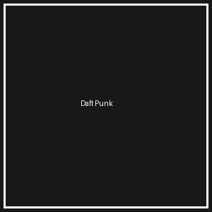
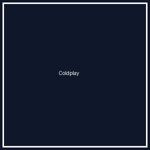

Visita el portal oficial de nuestra institución: Instituto Tecnológico de Nuevo León (TecNL)
Aprende más sobre desarrollo web en: W3Schools Online Web Tutorials


I used to rule the world
Seas would rise when I gave the word
Now in the morning, I sleep alone
Sweep the streets I used to own
I used to roll the dice
Feel the fear in my enemy's eyes
Listen as the crowd would sing
Now the old king is dead, long live the king
One more time, we're gonna celebrate
Oh yeah, all right, don't stop the dancing
One more time, we're gonna celebrate
Oh yeah, all right, don't stop the dancing
Music's got me feeling so free
We're gonna celebrate
Celebrate and dance so free
One more time!
Texto en negrita (<b>)
Texto importante (<strong>)
Texto en cursiva (<i>)
Texto enfatizado (<em>)
Texto marcado o resaltado (<mark>)
Texto más pequeño (<small>)
Texto eliminado tachado (<del>)
Texto insertado o subrayado (<ins>)
Texto con subíndice (<sub>): H2O (Fórmula química del agua)
Texto con superíndice (<sup>): E = mc2 (Ecuación de Einstein)
Información tomada del portal académico:
"La educación a distancia y el aprendizaje del desarrollo web permiten a los estudiantes de Sistemas Computacionales del Instituto Tecnológico de Nuevo León adquirir competencias clave en tecnologías de vanguardia para la industria 4.0."
Este párrafo incluye una imagen de fondo utilizando el atributo style y la propiedad CSS background-image: url('fondo.jpg'). Permite estilizar contenedores de texto con texturas o imágenes personalizadas.